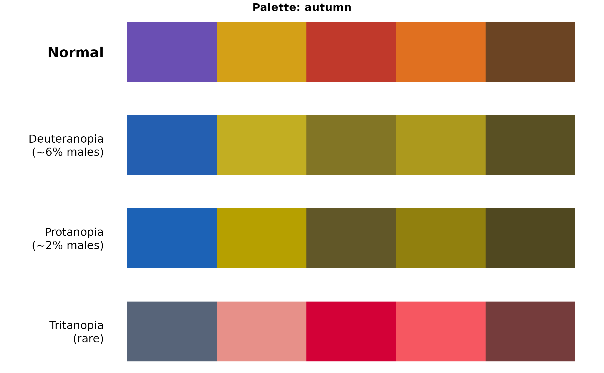
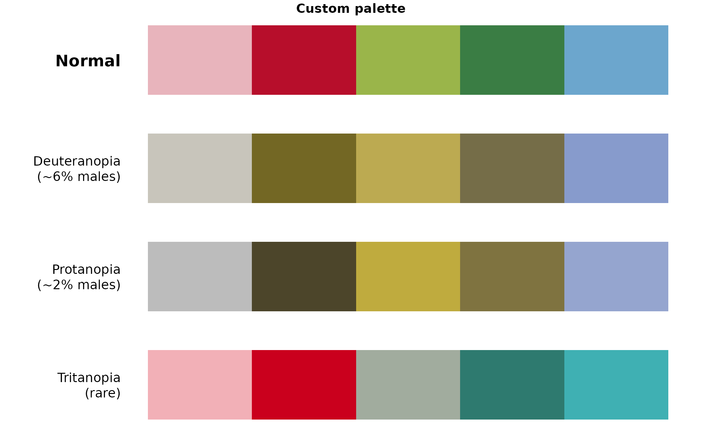

Displays a palette as seen by people with different types of color vision deficiency. Requires the colorspace package.
Examples
# Visualize built-in palette
plot_colorblind_sim("autumn")

# Visualize custom colors
plot_colorblind_sim(c("#E8B4BC", "#B70E2B", "#9AB54A", "#3A7D44", "#6CA6CD"))
